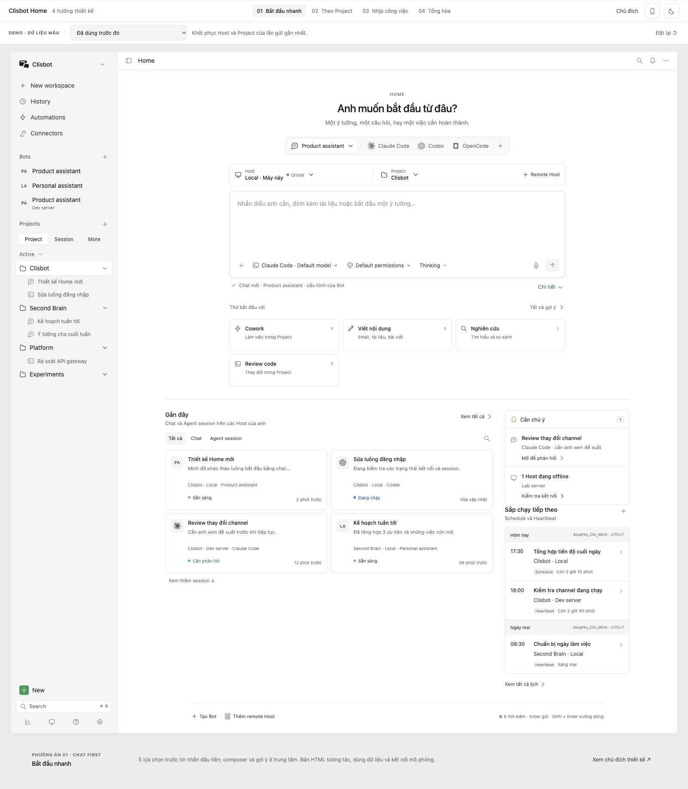
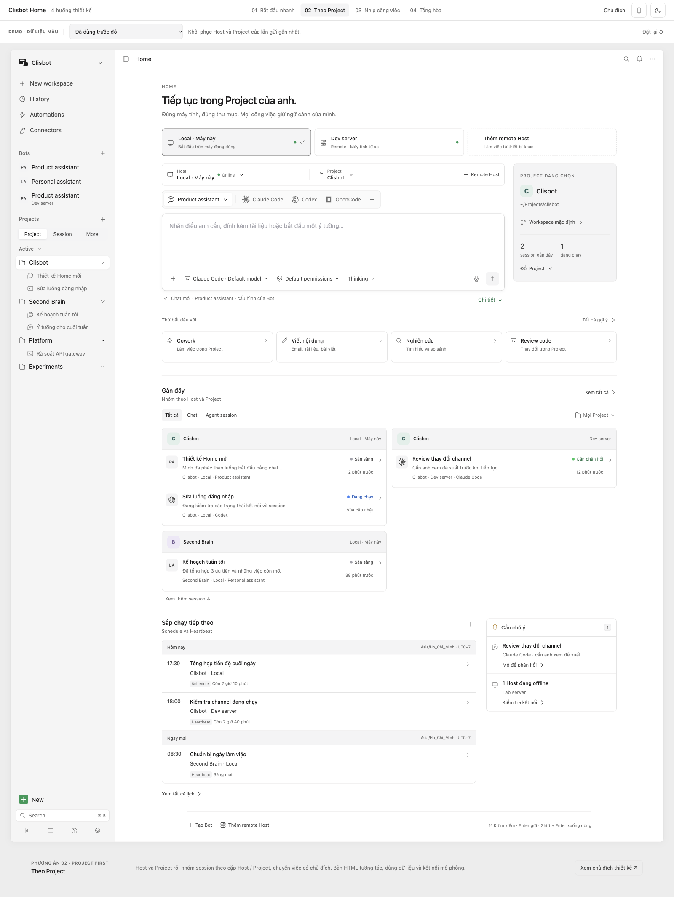
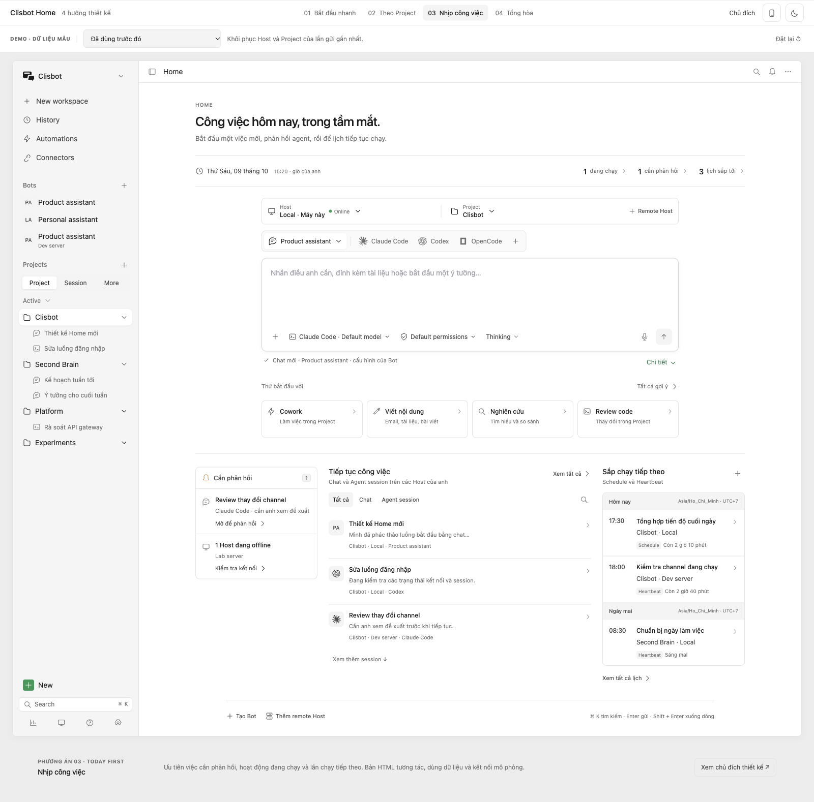
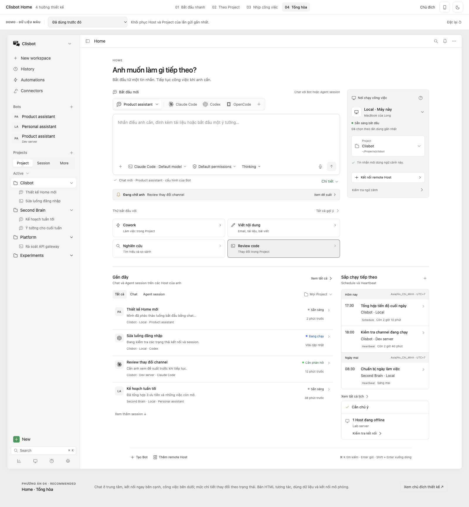

01 / CHAT FIRST
Bắt đầu nhanh
Chat làm điểm bắt đầu. Ngữ cảnh ngay trên ô nhập, gợi ý ngay dưới, session gần đây thành thẻ để tiếp tục nhanh.
Bốn bản hoàn chỉnh, cùng UI Clisbot hiện tại. Mỗi bản có chat, Host / Project, công việc gần đây, lịch sắp chạy và việc cần chú ý — với cách sắp xếp khác nhau.

Chat làm điểm bắt đầu. Ngữ cảnh ngay trên ô nhập, gợi ý ngay dưới, session gần đây thành thẻ để tiếp tục nhanh.

Máy tính và thư mục rõ ngay từ đầu. Composer đi cùng ngữ cảnh Project, session nhóm theo cả Host và Project.

Biết việc đang chạy, việc cần mình và lần chạy tiếp theo. Chat vẫn ở phía trước; các hoạt động chia thành ba cột dễ quét.

Chat chính diện; Host có vùng kết nối riêng. Hướng dẫn mở khi cần, ngữ cảnh gọn khi đã sẵn sàng. Đưa một việc cần phản hồi lên gần chat.
Lấy điểm bắt đầu gọn của bản 1, ngữ cảnh rõ của bản 2 và ưu tiên công việc của bản 3. Bản 4 thêm cách hiển thị theo trạng thái: lần đầu cần hướng dẫn, hằng ngày cần bắt đầu nhanh, sự cố cần đường khôi phục.
| Phương án | Điểm tập trung | Phù hợp | Đánh đổi |
|---|---|---|---|
| 01 · Bắt đầu nhanh | Tin nhắn đầu tiên | Một việc, một ngữ cảnh | Cần mở thêm để quản lý nhiều Project |
| 02 · Theo Project | Host + thư mục làm việc | Nhiều Project, nhiều máy | Nhiều thông tin trước ô chat |
| 03 · Nhịp công việc | Phản hồi + hoạt động + lịch | Theo dõi agent và automation | Màn hình bận hơn khi có nhiều hoạt động |
| 04 · Tổng hòa | Chat + kết nối theo trạng thái | Home chung cho Desktop, Web và Mobile | Cần giữ thứ tự ưu tiên khi bổ sung tính năng |